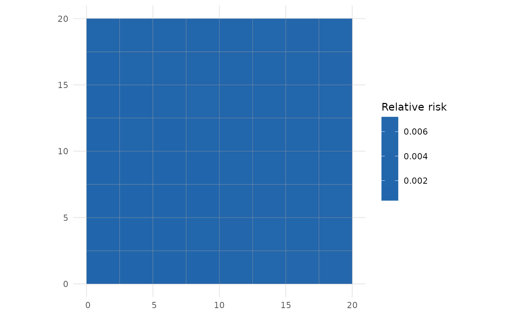
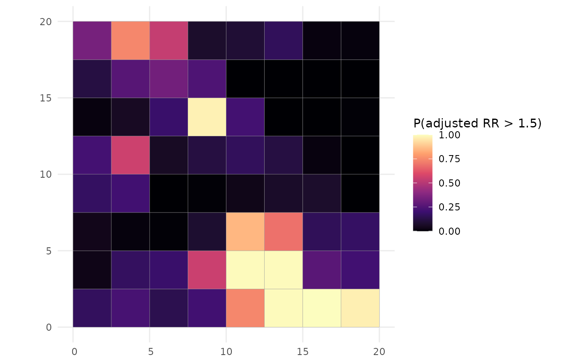

Predicts and maps a chosen quantity. Works for spatial fits (discrete or
continuous) and spatio-temporal fits (select a time).
Arguments
- x
an
"sdalgcp"fit.- what
one of
"relative_risk"(relative risk, default),"adjusted_rr"(covariate-adjusted relative risk),"relative_risk_se","adjusted_rr_se"or"exceedance".- type
"discrete"(default) or"continuous"(spatial fits).- time
for spatio-temporal fits, the time to map (default: first; use
NULLto facet all times).- threshold
threshold for
what = "exceedance".- which
for exceedance:
"adjusted_rr"(default) or"relative_risk".- cellsize
grid spacing for
type = "continuous".- sampler
"mcmc"(default) or"laplace".- ...
passed to the mapping layer.
Examples
# \donttest{
data(sdalgcp_data)
fit <- sdalgcp(cases ~ x1 + offset(log(pop)), data = sdalgcp_data,
control = sdalgcp_control(n_sim = 2000, burnin = 500, thin = 5,
reanchor = 0))
plot(fit) # relative-risk map (predicts internally)

plot(fit, what = "exceedance", threshold = 1.5)

# }